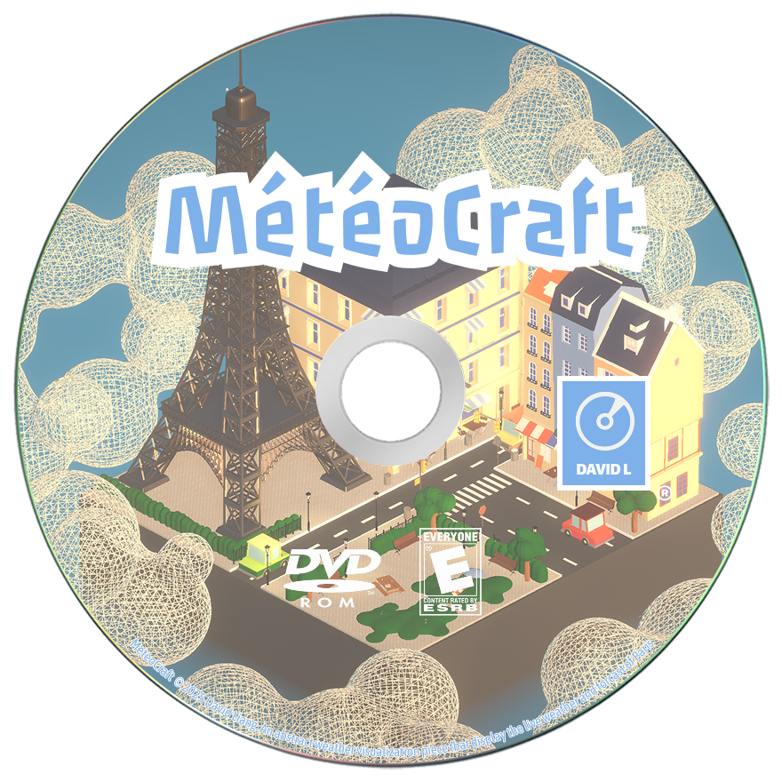
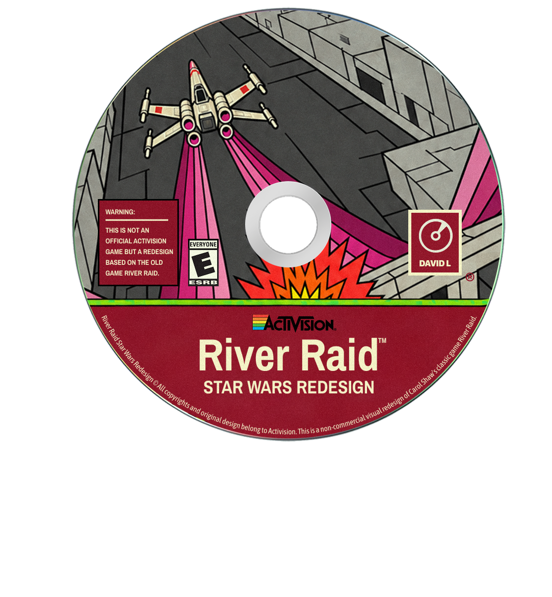
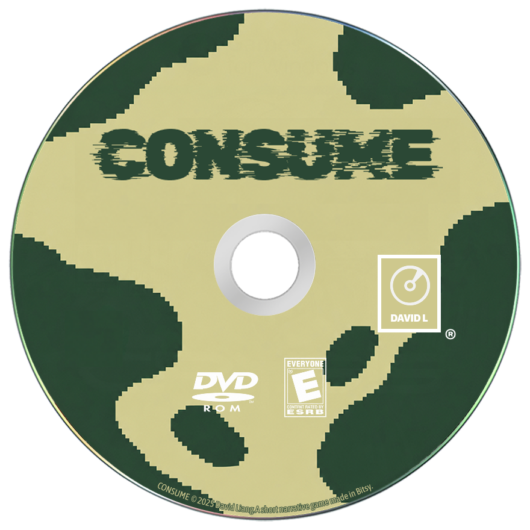

012025

MétéoCraft
An interactive weather visualization that turns live Paris weather into playful, abstract scenes.
David Liang / Beyond games

An interactive weather visualization that turns live Paris weather into playful, abstract scenes.

A non-commercial visual redesign of Carol Shaw’s Atari 2600 classic, with Star Wars-inspired sprites, a Death Star palette, and faster gameplay.

A short narrative game made in Bitsy.